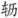

蝶 恋 花
周邦彦
早 行
月皎惊乌栖不定，更漏将阑，

辘牵金井① 。唤起两眸清炯炯，泪花落枕红绵冷② 。 执手霜风吹鬓影③ 。去意徊徨，别语愁难听。楼上阑干横斗柄④ ，露寒人远鸡相应。
【注释】
① 辘：井架上汲水的滑车叫轳辘或辘轳， 辘为其转动之声，亦作“轳辘”解。金井：金为饰词。 ②红绵：作枕芯用的木棉，其花红色，故谓。 ③霜风吹鬓影：李贺《咏怀》诗：“弹琴看文君，春风吹鬓影。”王琦注：“见室家相得之好。” ④阑干：纵横的样子。斗柄：北斗七星如古代酌酒的斗，有把，称斗柄或斗杓。
【语译】
明亮的月光惊起栖乌在枝上吵个不定，更漏的声音将残，轳辘在响，井边已有人汲水。刚从睡梦中被弄醒，一双眼珠儿炯炯发光，泪水滴在枕上，枕头一片湿冷。
我们紧握住对方的手，看寒风吹动鬓发，临去的心情彷徨无依，告别的话令人愁得不忍再听。高楼上空北斗七星已经横斜，天色将明，晓露侵肌寒，人已远去，只有雄鸡的啼叫声此起彼应。
【赏析】
周邦彦的词措词多精粹典丽，但这首题作“早行”写离别情景的词，却多用白描，语言也比较疏快，表现了另一种风格。
头三句是睡梦醒后枕上所闻，所述景象都从声音中听出：写了惊乌的鸣叫、拍翅声，写了将尽的更漏声、汲取井水的 辘声。远行之人本欲趁早起身，故闻声而觉，这就是“唤起”二字的含义。“两眸清炯炯”五字，形容准备早行者刚刚惊醒一刹那的神态，栩栩如生。心知离别在即，不觉“泪花落枕”，湿透“红绵”，触脸而“冷”，写来凄恻动人。这些都是起床前的情景。
下片写别时的情况。柳永《雨霖铃》有“执手相看泪眼”语，此用李长吉歌诗“春风吹鬓影”句，而易一字以合寒夜将残情景，泪眼相看之意固已在其中，而对心上人抚爱怜惜之情又为柳词所无。写离人去意彷徨、愁听别语之心态，亦刻画入微。末以斗横露冷、人已远去、唯闻鸡声相应作结，更觉离恨绵绵，凄婉不尽。